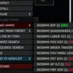

Mod
BALL - Better Ammo Loading List
- Downloads
- 21,771
- Favourites
- 51
- Mod lists
- 115
Description
This mod enhances the ammo list in the context menu when loading a magazine:
-
Displays additional stats for each ammo type:
Penetration Power, Velocity, or Damage — your choice in F12
-
Colors each stat using a gradient from green (better) to red (worse).
-
Automatically sorts the list by the selected stat — in Ascending/Descending order.
-
No more guessing or opening inspect each ammo type one by one just to find the best variant
🧪 Experimental Features:
- Show all ammo stats: all available stats are now displayed style [Damage][Penetration Power][Speed] — only the sorting stat is highlighted(Author style -> Ammo Stats on Name)
- Ammo stats line wrapping: ammo stats now appear on a new line (only works with the “Show all ammo stats” feature)
Install
Extract the BepInEx folder from the 7z archive to the game root directory. Profit!
Version
1.1.1
SPT ~4.1
Fika: compatible
55 downloads7.4 KB
Update for SP[R] 4.1
VirusTotal: report 1
Version
1.1.0
SPT ~4.0.0
Fika: unknown
16,797 downloads7.4 KB
Version for SPT 4.0
VirusTotal: report 1
Version
1.0.1
SPT ~3.11.0
Fika: unknown
3,846 downloadsUnknown size
✅ Fixed:
- Gradient now properly reflects the proportional value of the stat (e.g. Penetration)
➕ Added:
- Option to choose gradient colors (bad/good)
🧪 Experimental Features:
- Show all ammo stats: all available stats are now displayed style [Damage][Penetration Power][Speed] — only the sorting stat is highlighted
- Ammo stats line wrapping: ammo stats now appear on a new line (only works with the “Show all ammo stats” feature)
VirusTotal: report 1